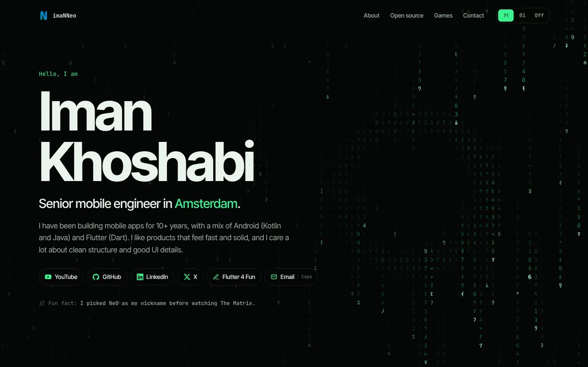
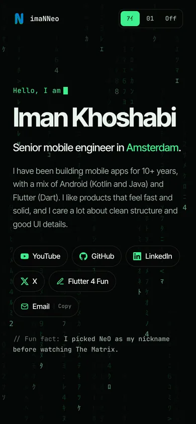

21Dark, green
Matrix rain
A calm overview of you over digital rain drawn by a shader. The rain clears around the pointer, and a small switch changes the glyphs or turns the rain off.
TryMove the pointer and the rain clears around it. The small switch in the top corner changes it to 01 or turns it Off.